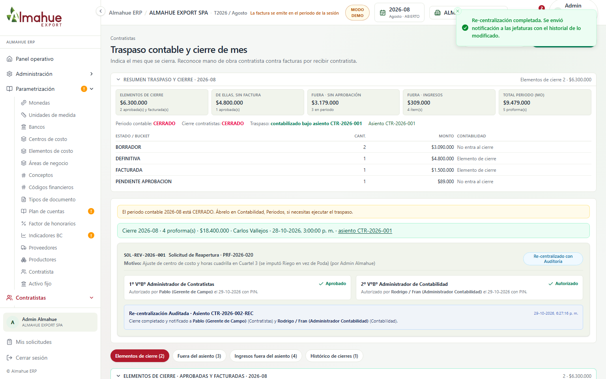

1. Traspaso Contable y Cierre: Solicitud de Reapertura, Doble Visto Bueno y Auditoría


- Qué cambió: Se eliminaron los botones de reapertura directa o no controlada. Cuando el módulo de contratistas y el mes contable están cerrados, cualquier modificación requiere una solicitud formal con justificación. La reapertura exige un primer visto bueno del Administrador de Contratistas (Abastecimiento) con su PIN de cuatro dígitos, y un segundo visto bueno del Administrador de Contabilidad en su panel dedicado. Al completar la edición y re-centralizar, se preserva el registro de auditoría con ambas firmas y el nuevo asiento contable.
- Qué no se apretó: No se alteraron los asientos contables históricos ni se desarmaron los mayores generales.